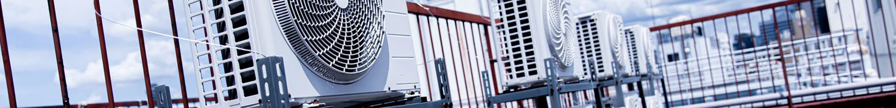

心地よい空間を創造します
create & confy space
空調設備ACEは
富山県のエアコンの設備会社です
service

空調設備工事
店舗・オフィス・工場などの空調設備の新築工事・リニューアル工事を承ります。 家庭用エアコン・業務用エアコンの販売から施工までをワンストップで空調設備ACEが手掛けます。 お客様のニーズに合わせて常に心地よい空間の創造を目指し、最適な空調設備システムをご提案します。
service

エアコン洗浄
エアコンの内部は、ホコリが溜まりやすく湿度があるため、カビやダニなどのハウスダストが繁殖しやすい場所です。 これらは、放っておくとアレルギーの原因になる可能性があります。 定期的なエアコンのクリーニングは、店舗・オフィス・施設内の空調の清潔を保つためにも大変重要です。
works



施工事例